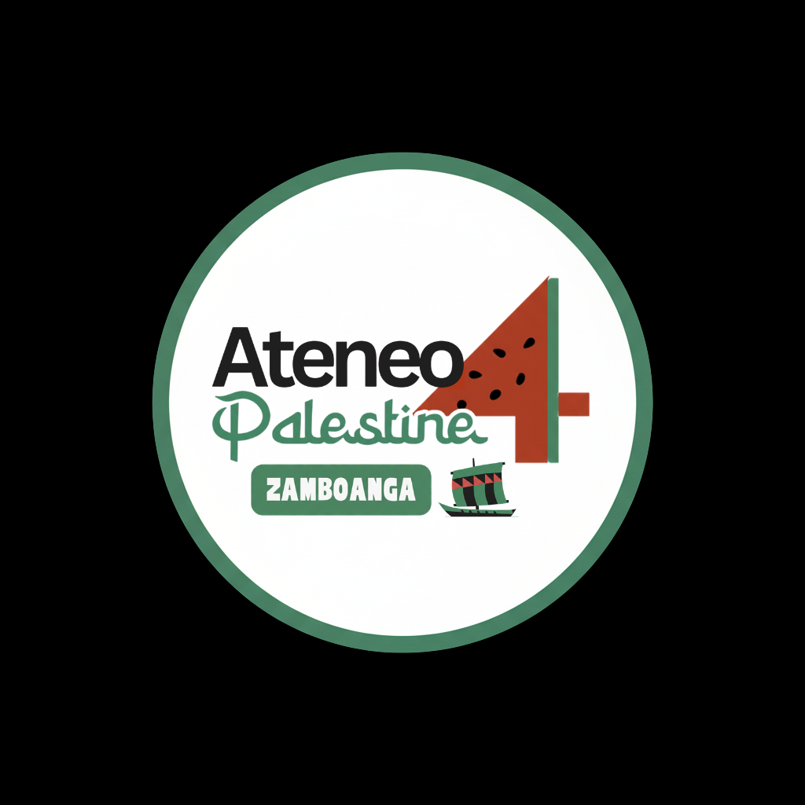
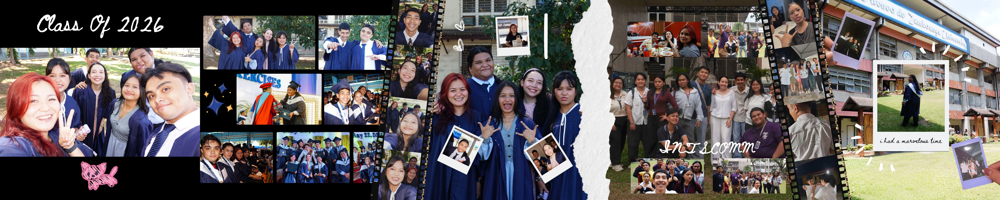
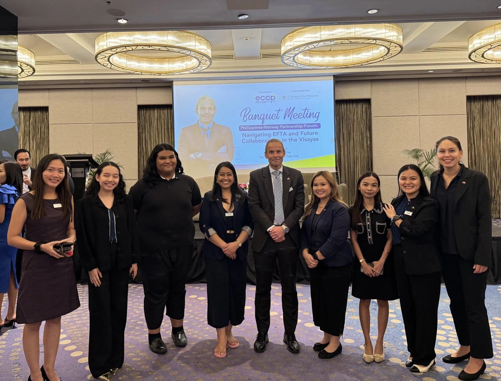
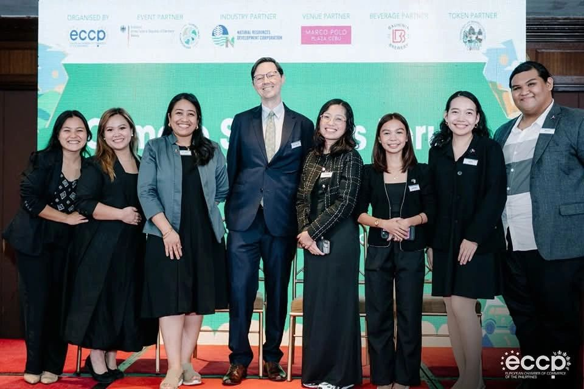
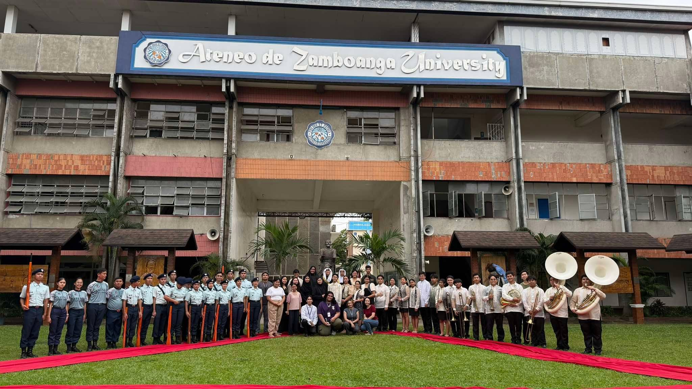
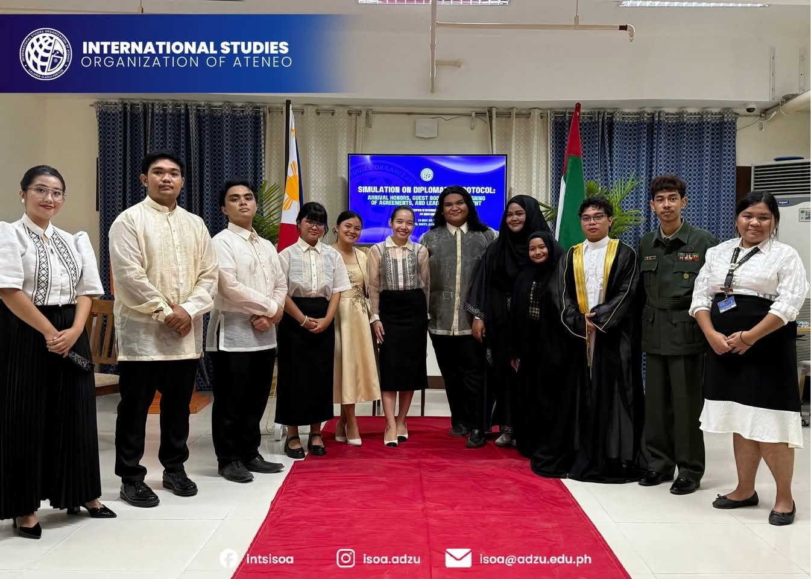
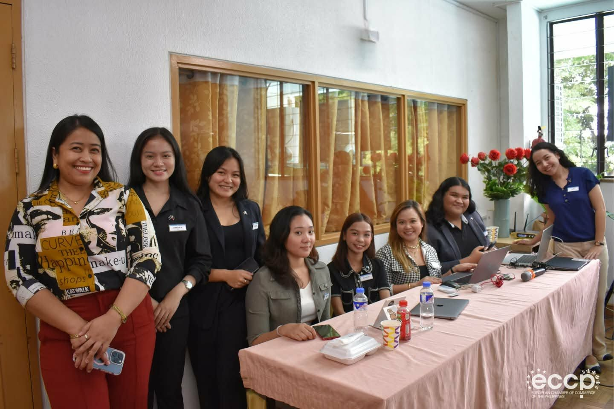
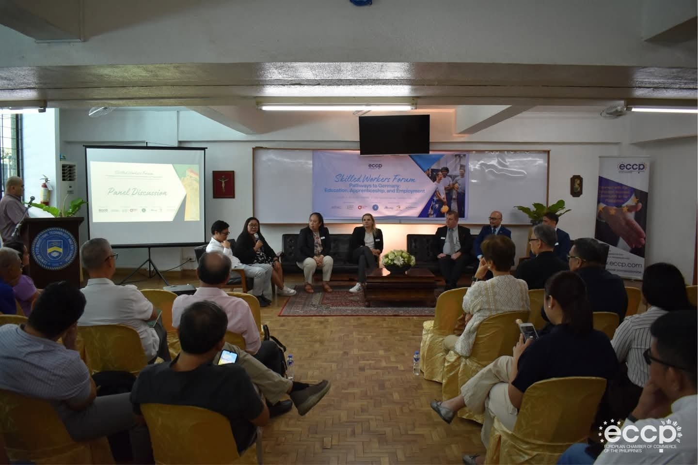

Projects
A few pieces of work handled directly — brand identity and social media content created for organizations she’s been part of.

Brand Identity
Ateneans 4 Palestine — Zamboanga Logo
Designed the chapter’s logo mark, pairing bold typography with a watermelon motif and a local vinta sail — symbols of solidarity and Zamboanga identity — for use across social media and printed materials.

Social Media Content
“Class of 2026” Graduation Carousel
Compiled and designed a multi-panel photo carousel celebrating the graduating batch — combining candid shots, film-strip framing, and Polaroid-style overlays into one cohesive scrollable post.

Event Support
Philippines–Norway Partnership Forum
Part of the ECCP team behind the “Philippines-Norway Partnership Forum: Navigating EFTA and Future Collaborations in the Visayas,” held June 10, 2025 at the Radisson Blu Hotel, Cebu City — supporting a banquet meeting where Ambassador Lyster engaged ECCP Cebu members on opportunities in renewable energy, seafood, and tourism.

Event Logistics & Marketing
Climate Solutions Forum — Cebu
Led Tech and Logistics for the Cebu leg of the “Climate Solutions Forum: Building a Sustainable and Resilient Economy,” held June 18 at Marco Polo Plaza Cebu — organized by ECCP Cebu in partnership with the German Embassy Manila, bringing together government, business, civil society, and international voices for a dialogue on sustainability and climate action. Handled all logistics and marketing for the event.
Photo courtesy of Grangetin Productions and ECCP Cebu


Logistics & Finance
Simulation on Diplomatic Protocol
Served as Logistics Head and Finance Head for the International Studies Organization of Ateneo’s “Simulation on Diplomatic Protocol” — a hands-on protocol simulation held at Ateneo de Zamboanga University.


Event Support
Skilled Workers Forum — ECCP Cebu
Supported the “Skilled Workers Forum: Pathways to Germany — Education, Apprenticeship, and Employment,” her last event with the ECCP Cebu team, featuring a panel discussion on skilled-worker pathways between the Philippines and Germany.